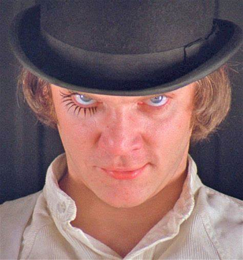
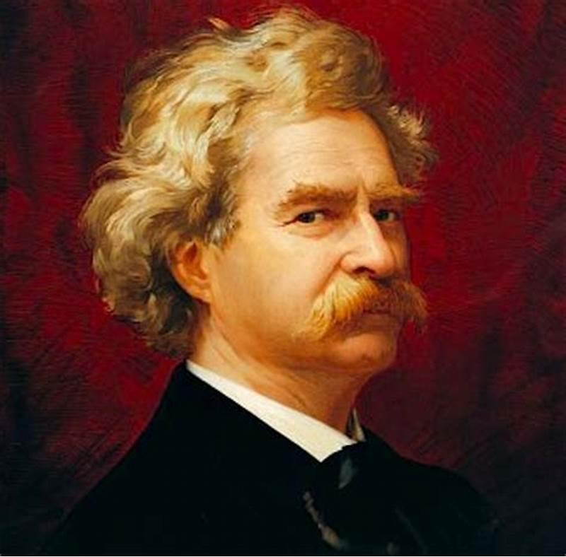
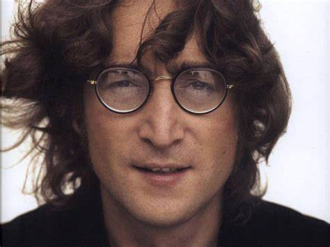
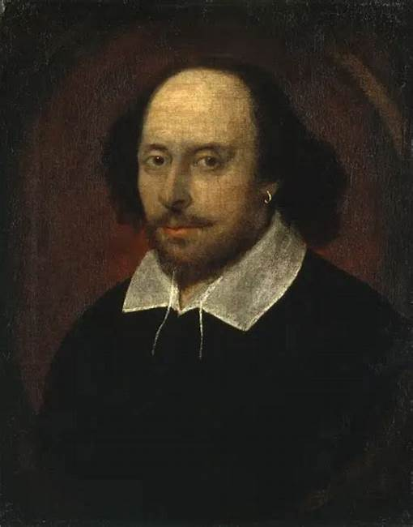
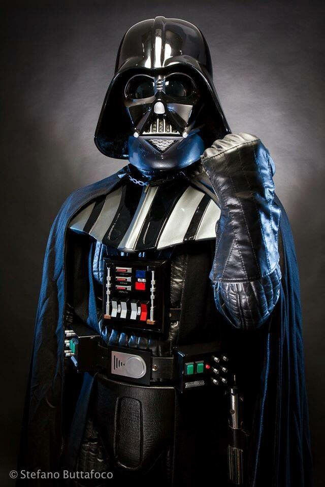
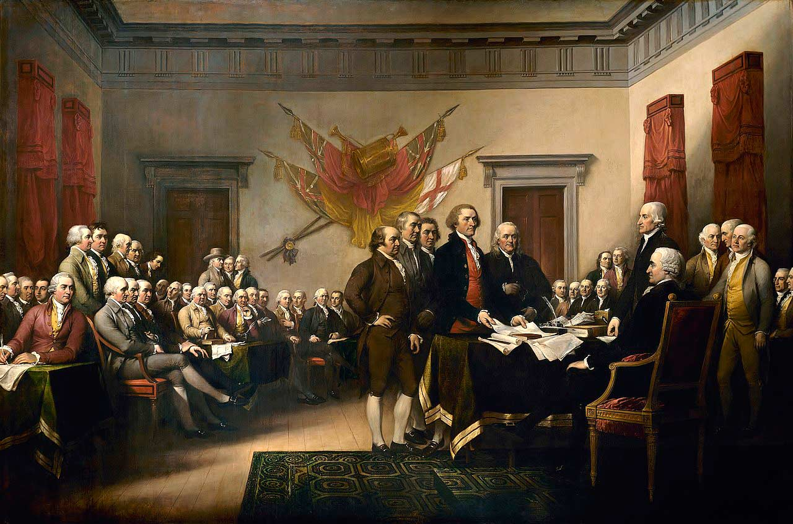
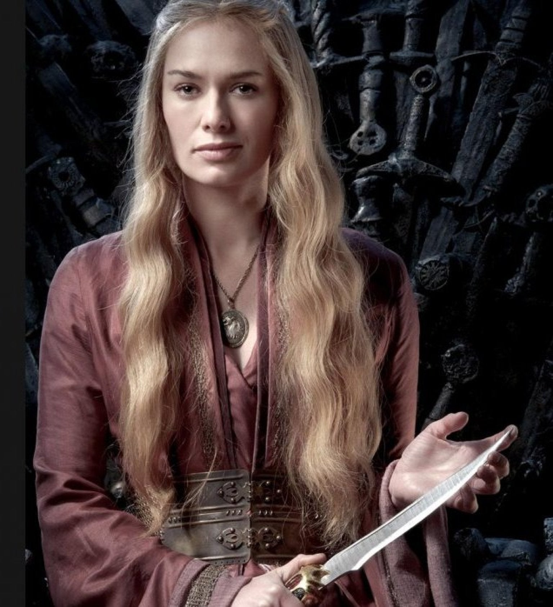
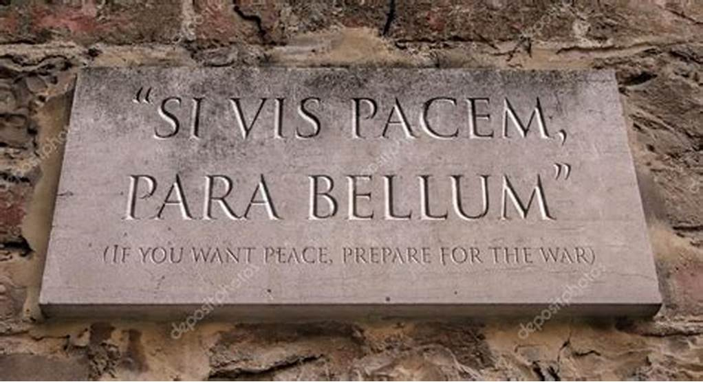
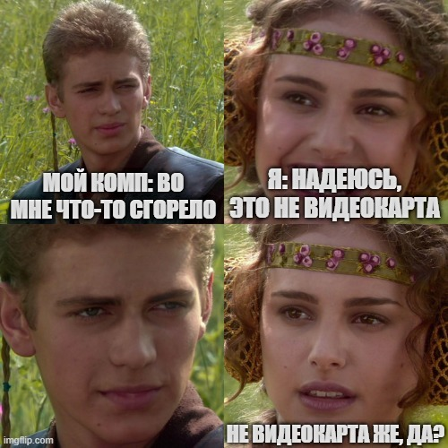
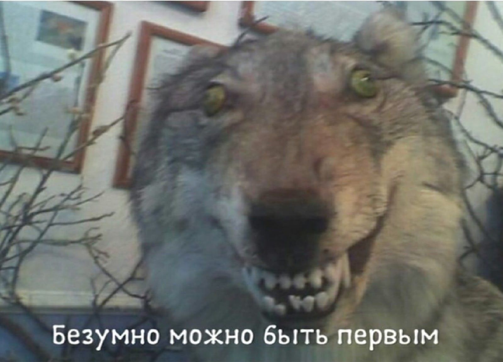

Популярные цитаты
Цитата дня
“Я имею право на жизнь!”)
“Я имею право на жизнь!” — (из фильма “Заводной апельсин” — Алекс Де Лардж)
“Держись подальше от людей, которые пытаются принизить твои амбиции. Мелкие люди всегда делают это, но великие заставляют тебя поверить, что ты тоже можешь стать великим.” — Марк Твен (атрибуция подтверждена)

“Жизнь — это то, что с тобой случается, пока ты строишь другие планы.” — Джон Леннон (часто ошибочно приписывается другим авторам, но наиболее распространенное авторство - Леннон)

“Быть или не быть, вот в чём вопрос.” — Гамлет (Уильям Шекспир)

“Я не знаю, что такое гнев, но я узнаю его в лице своих врагов.” — (Дарт Вейдер, “Звёздные войны”)

“Все люди созданы равными.” — Декларация независимости США (хотя формулировка и авторство сложнее, фраза стала крылатой)

“Страх убивает больше людей, чем сама смерть.” — (из сериала “Игра престолов” – Серсея Ланнистер)

“Если ты хочешь мира, готовься к войне.” — (атрибуция не всегда точная, приписывается различным историческим фигурам, но сама фраза крайне популярна)

“Надежда умирает последней.” — (хотя точный автор неизвестен, цитата укоренилась в мировой культуре)

“Быть первым среди равных — это лучше, чем быть равным среди первых.” — (происхождение этой цитаты сложно отследить, но она популярна как афоризм)
